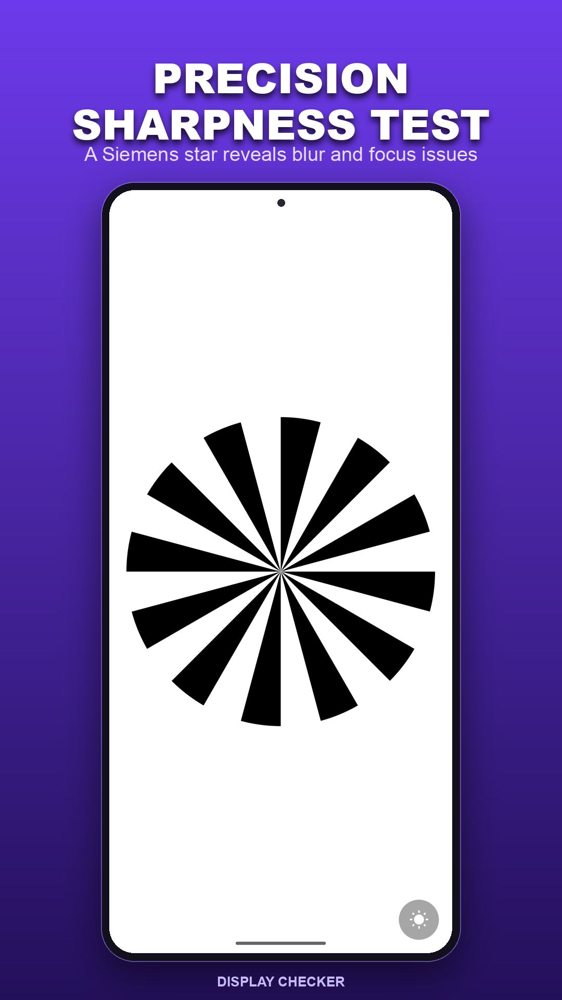
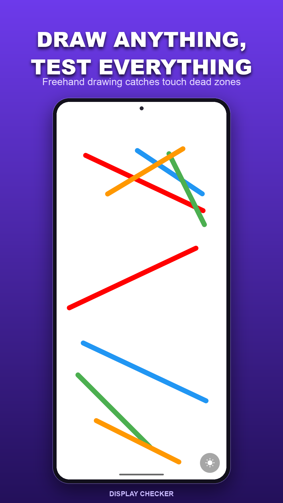
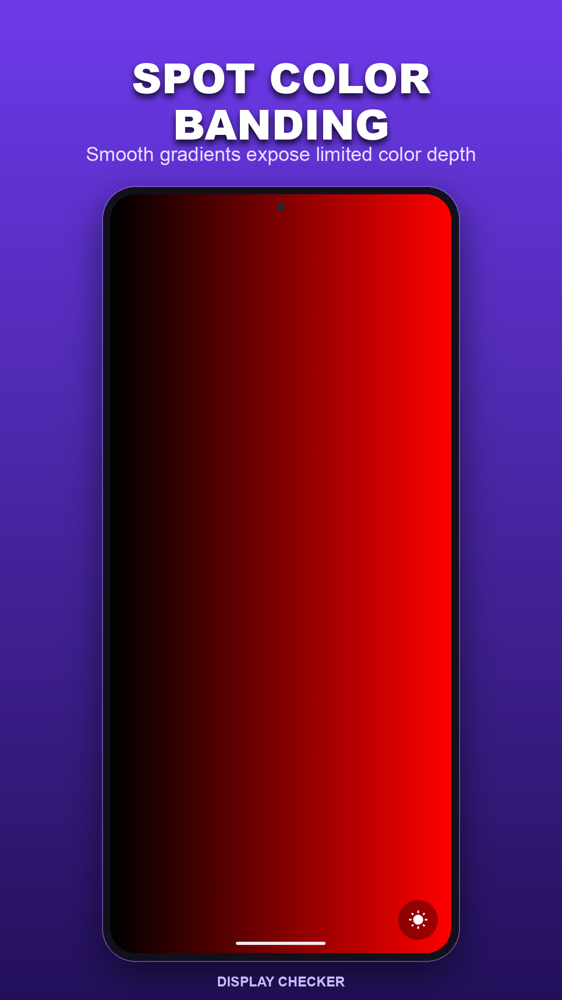
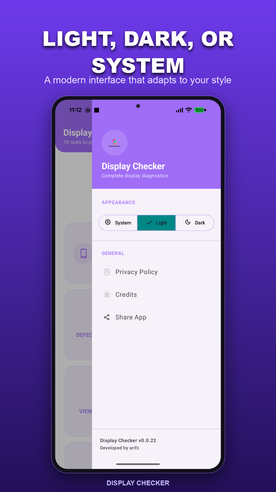

Before you buy
Trying a second-hand phone? Check the screen and touch response before you decide.
A tiny dot that won’t go away? A spot that misses your taps? Take a closer look with simple display and touch tests.
A SMALL CHECK, AT THE RIGHT TIME
Trying a second-hand phone? Check the screen and touch response before you decide.
Use plain colors and test patterns to get a better look at a mark, patch or uneven shade.
Try the corners, edges and display patterns to see how the replacement feels.
LOOK CLOSER
Choose the check you need. There’s no long setup before you can get started.
Switch through solid colors and look for dots that stay dark, bright or a different color.
Defective PixelsCheck for patches across the panel, visible bands in gradients, and changes when you tilt the phone.
Uniformity · Gradient · Viewing AngleTap the grid, draw across the edges, or drag a ball around. Watch for spots that don’t respond as expected.
Tap · Scribble · DragExplore sharpness, gamma, color differences and motion. Display Info shows the specifications reported by your device.
Sharpness · Gamma · Color Distance · Response TimeThese are visual and touch checks. They help you inspect a screen; they don’t repair pixels or certify that a phone has no hardware problems.
FROM THE APP
Simple screens that leave room for the test. Tap any image for a closer look.




NOT SURE WHERE TO START?
Find a comfortable brightness and wipe the screen so a speck of dust doesn’t look like a bad pixel.
Open Google PlayOpen Defective Pixels. Look across each color for small dots that don’t match the rest of the screen.
Open Uniformity and look for unusually bright or dark areas. Tilt the phone to see how the picture changes.
Use Tap and Scribble across the corners and sides. Look for missed taps or breaks in a continuous stroke.
A FEW THINGS TO KNOW
Yes. The app is free to use, has no ads, and doesn’t ask you to create an account.
The display and touch tests run on your phone and work offline. Internet access is used for services such as analytics, crash reporting and opening the privacy policy.
No. It provides patterns that help you look for display problems. It cannot repair the screen or automatically confirm a hardware fault.
Test inputs such as scribble strokes stay on your device. The app uses Firebase Analytics and Crashlytics for usage information and crash reports. You can read the details in the privacy policy.
Display Checker is an Android app. Google Play shows whether it’s available for your device. The information shown in Display Info depends on what your phone supports and reports.
DISPLAY CHECKER
Pick a test. See how your phone responds.